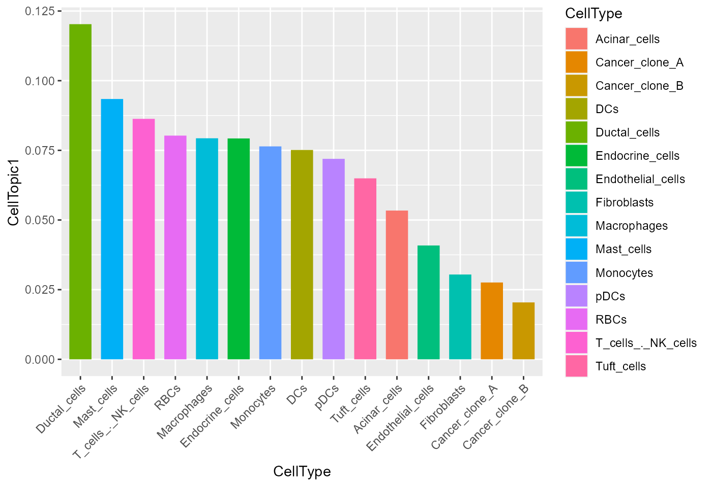
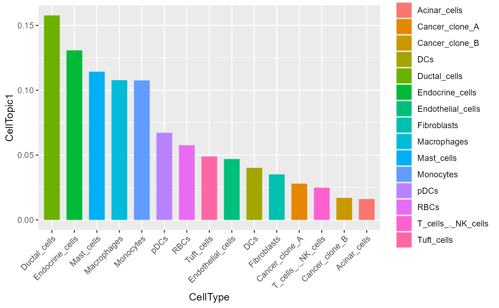

Data input
SpaTopic requires two inputs:
spot_celltype: The result of the deconvolution of single-cell and spatial transcriptome data, or a matrix with rows as spots and columns as cell types.*spot_clusters: A datafream with spot group information.*
And they should be like
data(spot_celltype)
data(spot_clusters)
head(spot_celltype)
Acinar_cells Ductal_cells Cancer_clone_A Cancer_clone_B DCs
10x10 5.838572e-02 0.2349066 1.365076e-03 3.892868e-04 0.165860789
10x13 4.807943e-05 0.9984677 1.654640e-06 9.032885e-06 0.001244634
10x14 4.701190e-02 0.8373601 4.846860e-03 9.009235e-04 0.003541947
10x15 5.047613e-02 0.8020465 1.911570e-04 3.325224e-02 0.084113110
10x16 4.694120e-03 0.9718078 1.719378e-06 6.266388e-04 0.007665514
10x17 6.850619e-02 0.7737652 1.034929e-02 5.242836e-02 0.030090839
Tuft_cells pDCs Endocrine_cells Endothelial_cells Macrophages
10x10 1.149557e-02 5.750904e-05 3.794494e-03 1.554314e-01 7.575614e-02
10x13 1.411944e-04 2.179189e-08 2.791803e-08 2.522234e-08 4.952721e-05
10x14 2.430843e-05 6.745099e-05 7.014669e-08 9.208190e-03 3.539390e-02
10x15 3.087975e-07 2.387285e-04 1.660241e-07 3.787078e-04 1.868701e-02
10x16 2.859347e-07 1.835252e-04 9.321908e-09 1.535896e-04 2.258778e-05
10x17 7.639672e-04 1.963630e-04 1.888457e-04 2.610257e-03 1.254141e-03
Mast_cells T_cells_._NK_cells Monocytes RBCs Fibroblasts
10x10 1.335059e-07 1.419896e-05 6.324585e-05 6.935704e-08 2.924798e-01
10x13 2.560977e-08 8.100230e-10 2.999011e-05 4.812122e-06 3.255235e-06
10x14 7.319528e-06 2.780869e-06 8.047062e-04 7.357054e-06 6.082224e-02
10x15 9.115675e-07 2.629728e-06 4.568320e-04 2.846073e-05 1.012715e-02
10x16 6.924793e-07 2.044994e-05 1.654387e-06 1.444002e-09 1.482138e-02
10x17 4.102771e-06 1.894866e-04 6.179414e-04 3.425166e-06 5.903159e-02head(spot_clusters)
row col sizeFactor cluster.init spatial.cluster
10x10 10 10 4.7761108 1 2
10x13 10 13 1.0052199 2 2
10x14 10 14 0.8106812 2 2
10x15 10 15 0.4987377 2 2
10x16 10 16 0.4346143 2 2
10x17 10 17 0.7446991 2 2*The data used here is from CARD and BayesSpace.
Simply usage
Enter the deconvolution result spot_celltype and the
grouping information of the spot spot_clusters to get an
result_list :
CellTopicis a data frame which can be add to a Seurat object.domain_topicis a data frame, row is CellTopic and col is domain.celltype_topicis a data frame, row is celltype and col is CellTopic.Cell_topicis a vector of which topic be chosen in each CellTopic.
For subsequent analyses, CellTopic and
celltype_topic are mainly used.
result_list <- CellTopic(
spot_celltype,
spot_clusters,
cluster = "spatial.cluster",
num_topics = 15
)You can use this method to show the spatial distribution of CellTopics.
head(result_list[["CellTopic"]])
CellTopic CellTopic1 CellTopic2 CellTopic3
10x10 CellTopic2 0.488441042759359 0.624259237777972 0.00894909290161328
10x13 CellTopic2 0.488441042759359 0.624259237777972 0.00894909290161328
10x14 CellTopic2 0.488441042759359 0.624259237777972 0.00894909290161328
10x15 CellTopic2 0.488441042759359 0.624259237777972 0.00894909290161328
10x16 CellTopic2 0.488441042759359 0.624259237777972 0.00894909290161328
10x17 CellTopic2 0.488441042759359 0.624259237777972 0.00894909290161328
CellTopic4
10x10 0.0225236725913688
10x13 0.0225236725913688
10x14 0.0225236725913688
10x15 0.0225236725913688
10x16 0.0225236725913688
10x17 0.0225236725913688
# library(Seurat)
# st_obj is a seurat object
# st_obj <- AddMetaData(st_obj, result_list[["CellTopic"]])
# SpatialDimPlot(st_obj, group.by = "CellTopic")head(result_list[["celltype_topic"]])
CellTopic1 CellTopic2 CellTopic3 CellTopic4
Acinar_cells 0.05338717 0.03328935 5.233687e-02 0.171658099
Ductal_cells 0.12028057 0.14460117 4.655737e-06 0.006849717
Cancer_clone_A 0.02757192 0.01833829 1.822694e-01 0.012461637
Cancer_clone_B 0.02042047 0.01336746 1.710831e-01 0.003014254
DCs 0.07513535 0.06655371 2.530777e-02 0.132506711
Tuft_cells 0.06494618 0.04658163 4.832354e-02 0.165805335And use this to show the cell type score for each CellTopic.
library(ggplot2)
plot_data <- result_list[["celltype_topic"]]
plot_data$CellType <- rownames(plot_data)
ggplot(plot_data,
aes(x = reorder(CellType, CellTopic1, decreasing = TRUE), y = CellTopic1)) +
geom_bar(aes(fill = CellType), stat = "identity", width = 0.7) +
xlab("CellType") +
theme(axis.text.x = element_text(angle = 45, hjust = 1, vjust = 1))
Optional parameters
result_list <- CellTopic(
spot_celltype,
spot_clusters,
cluster = "spatial.cluster",
num_topics = 13,
percent = 0.7
)We recommend that the value of the num_topics is
generally slightly larger than the group number of spot.
The larger the percent, the more dependent the results
of deconvolution. We recommend using a value of 0.5-0.9.
Another strategy
If you want to focus less on percentages and more on the information
carried by a single topic, you can use Binarization = TRUE
.
result_list <- CellTopic(
spot_celltype,
spot_clusters,
cluster = "spatial.cluster",
num_topics = 13,
Binarization = TRUE
)
plot_data <- result_list[["celltype_topic"]]
plot_data$CellType <- rownames(plot_data)
ggplot(plot_data,
aes(x = reorder(CellType, CellTopic1, decreasing = TRUE), y = CellTopic1)) +
geom_bar(aes(fill = CellType), stat = "identity", width = 0.7) +
xlab("CellType") +
theme(axis.text.x = element_text(angle = 45, hjust = 1, vjust = 1))
Meta Topic
If you want to explore different spatial domains based on the cell
type division of the CellTopic, we provide a simple clustering option,
meta.cell = TRUE.
result_list <- CellTopic(
spot_celltype,
spot_clusters,
cluster = "spatial.cluster",
num_topics = 13,
percent = 0.7,
meta.cell = TRUE,
k = 3
)
head(result_list[["MetaTopic"]])
MetaCluster
CellTopic1 1
CellTopic2 1
CellTopic3 2
CellTopic4 3k is a integer of how much MetaTopic to choose. method is the agglomeration method to be used.